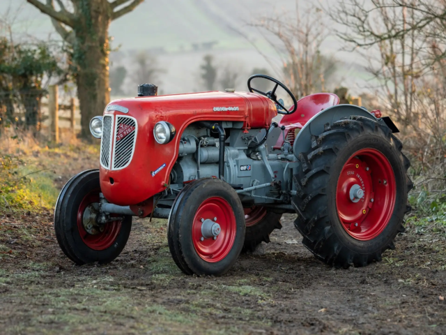

Do Campo a Cidade
Êxodo rural é a migração de pessoas do campo para a cidade. Este fenômeno tem várias causas e consequências, tanto para as áreas rurais quanto para as urbanas.
Em Busca
As principais causas do êxodo rural incluem a busca por melhores oportunidades de trabalho, melhores condições de vida, e acesso a serviços como saúde e educação.
De Oportunidades
Entre as consequências estão a urbanização acelerada, crescimento desordenado das cidades, e o abandono e a decadência das áreas rurais.